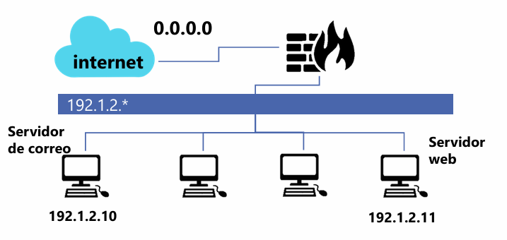

Introducción
En esta actividad se diseñaron políticas de filtrado para un firewall perimetral con el objetivo de proteger una red interna 192.1.2.0/24 expuesta a Internet. A partir de una topología definida, se establecieron reglas específicas en iptables considerando protocolo, direcciones IP, puertos y estado de conexión.
El enfoque principal fue implementar una política restrictiva por defecto, permitiendo únicamente el tráfico estrictamente necesario para el funcionamiento del servidor web y el servidor de correo, así como la comunicación saliente controlada desde la red local.
Desarrollo
Teniendo en cuenta la topología de red mostrada completa la tabla con las reglas de iptables que deberían aplicarse en el Firewall para llevar a cabo las acciones solicitadas. Las reglas, siempre que sea posible, deben determinar protocolo, dirección IP origen y destino, puerto/s origen y destino y el estado de la conexión.

Reglas iptables
1. Establecer una política restrictiva.
iptables -P FORWARD DROP
2. Permitir el tráfico de conexiones ya establecidas.
iptables -A FORWARD -m state --state ESTABLISHED, RELATED -j ACCEPT
3. Aceptar tráfico DNS (TCP) saliente de la red local.
iptables -A FORWARD -p tcp -s 192.1.2.0/24 -d 0.0.0.0/0 --dport 53 -m state --state NEW -j ACCEPT
4. Aceptar correo entrante proveniente de Internet en el servidor de correo.
iptables -A FORWARD -p tcp -s 0.0.0.0/0 -d 192.1.2.10 --dport 25 -m state --state NEW -j ACCEPT
5. Permitir correo saliente a Internet desde el servidor de correo.
iptables -A FORWARD -p tcp -s 192.1.2.10 -d 0.0.0.0/0 --dport 25 -m state --state NEW -j ACCEPT
6. Aceptar conexiones HTTP desde Internet a nuestro servidor web.
iptables -A FORWARD -p tcp -s 0.0.0.0/0 -d 192.1.2.11 --dport 80 -m state --state NEW -j ACCEPT
7. Permitir tráfico HTTP desde la red local a Internet.
iptables -A FORWARD -p tcp -s 192.1.2.0/24 -d 0.0.0.0/0 --dport 80 -m state --state NEW -j ACCEPT
Evidencia y material multimedia
Video demostrativo
Reflexión técnica
Esta práctica permitió comprender la importancia de aplicar el principio de mínimo privilegio en configuraciones de firewall. Definir una política restrictiva y luego habilitar únicamente los servicios necesarios reduce significativamente la superficie de ataque.
Se reforzó la necesidad de considerar el estado de las conexiones (NEW, ESTABLISHED, RELATED) para evitar bloqueos involuntarios en comunicaciones legítimas, especialmente en servicios como HTTP y correo electrónico.
En escenarios reales, una configuración incorrecta puede exponer servidores críticos a Internet o interrumpir servicios internos. Por ello, la planificación estructurada de reglas y su correcta interpretación son habilidades fundamentales en la administración de seguridad de red.
Referencias técnicas
- Ellingwood, J. (2022, 1 noviembre). A Deep Dive into Iptables and Netfilter Architecture. DigitalOcean. https://www.digitalocean.com/community/tutorials/a-deep-dive-into-iptables-and-netfilter-architecture
- IBM. (2026, 13 enero). Configuración de IPtables. IBM QRADAR Security Intelligence Platform. https://www.ibm.com/docs/es/dsm?topic=iptables-configuring